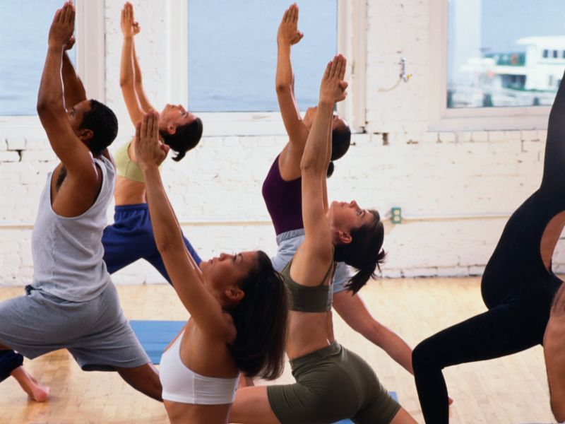
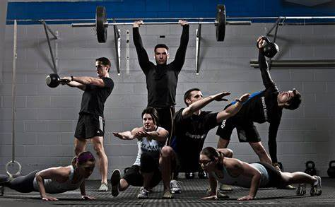
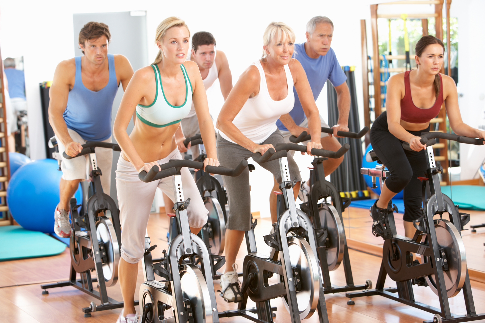

Una amplia variedad de clases de ejercicios, incluyendo yoga, spinning, entrenamiento de fuerza y mucho más:
● Aerobic-step: ejercicios de tipo aeróbico con diferentes pasos.
● Pilates y yoga: ejercicios de entrenamiento que une el ejercicio y el control mental y respiratorio.Muy recomendable para mitigar dolores musculares.
● Spinning: ejercicio aeróbico que fortalece principalmente las piernas
● BodyPumb: entrenamiento con ejercicios que incluyen pesas y banco aeróbico que se realizan al ritmo de música
● GAP: entrenamiento para tonificar glúteos, abdominales y piernas.
● Crossfit: trabaja la fuerza muscular y la capacidad aeróbica con pesas, barras, el peso de nuestro propio cuerpo.


